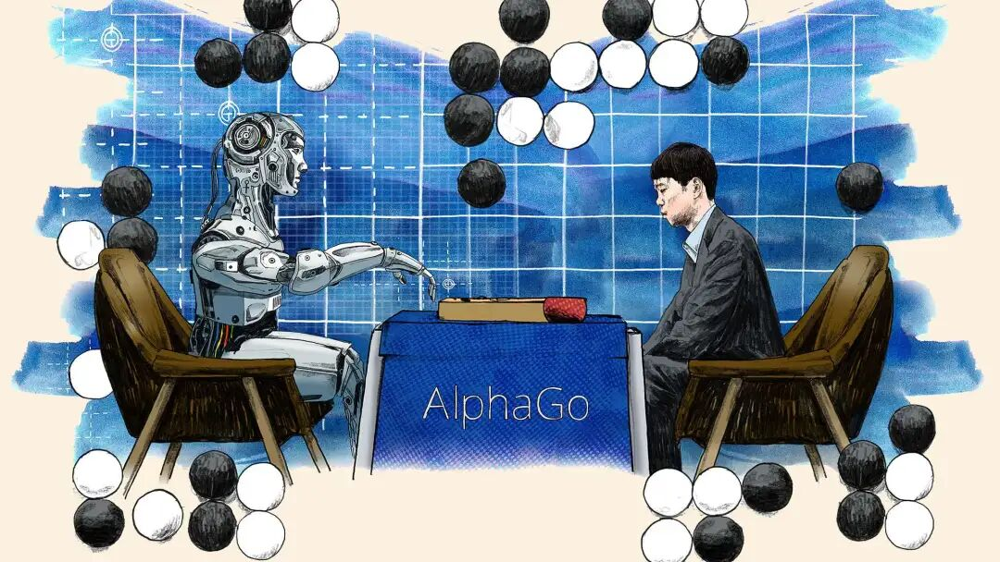
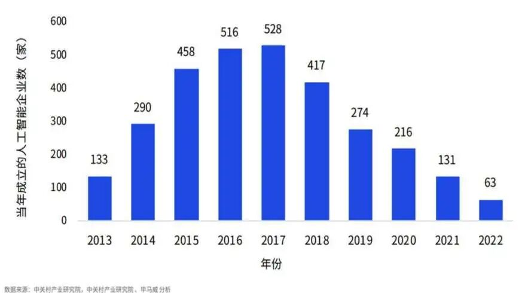
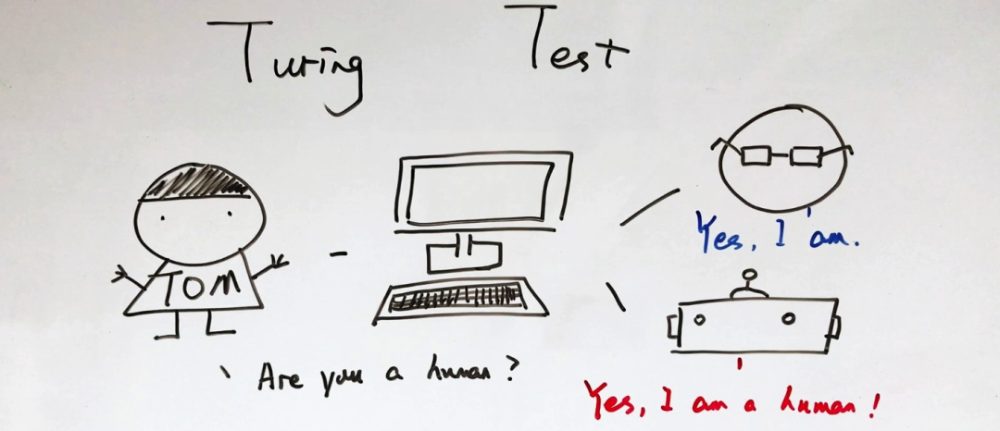
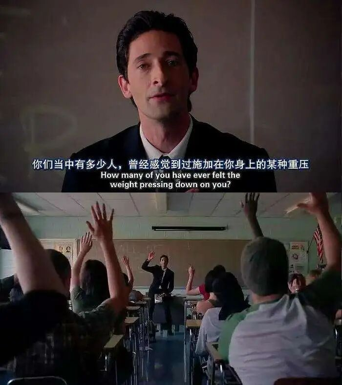

当物质不再成为人类社会的连接，精神世界或许将被赋予更高意义。对所有人来说，对于意义、对于社群的追求，将有可能变得比对工作的追求更为重要。而从漫长倦怠中苏醒的人类，最终会重新成为人类。
无论是从第一个战胜围棋世界冠军的AlphaGo开始，还是从2023年引起世界震撼的ChatGPT来看，人工智能的发展在我们这个时代已经势不可挡了。人工智能与机器人的应用逐渐渗入我们生活的每一个角落，上到大数据算法模型，下到家庭清洁机器人，我们人类的生活渐渐与其密不可分。面对如此新兴的事物，人们内心充满了忧虑和好奇，未来人工智能是否会替代人的工作？它将会如何影响人的生存与发展？

图1 AlphaGo战胜人类棋手
陈高华等（2022）从马克思哲学角度指出：“人的未来”问题的本质是对人类历史发展趋势的问题，也是追问现存社会运行方式的问题。因此，与其追问“人工智能将把人的未来带向何处”，不如思考我们人类将如何面对和处理社会的改变。
当然，人并不是孤立的。这些问题既是中国的，也是世界的。我们谈论人类时，不仅包括了发达地区，也包含了那些尚未受人工智能影响的地区。但也因为地区间发展的程度不同，社会文化背景不同，我们无法将美国与朝鲜同时进行概括，也无法将几乎没有现代产业的地区与人工智能高度发展的时代相匹。那些没有资源开发人工智能的地区又将会如何发展，我浅薄的认知难以解读，故不在此处展开。
我在一门课上提问一位人工智能行业从业者，他认为在当前条件和可见的技术应用来看，人工智能带来的生产力提升，主要不是对就业产生冲击的，而是对个人竞争力的加强，将人从辛苦繁复的工作中解放出来。而从长远来看，人工智能大规模应用，人的就业更多会是创造性的工作或者复杂的工作。他怀揣着乐观的心态提出畅想，或许那时“无用之人”可以过自己想过的人生，再把经历作为资源分享，交换快乐中实现价值。
当然，这不是唯一的答案，却给我带来了启发。
韩裔德国哲学家韩炳哲认为，21 世纪的社会不再是一个规训社会，而是功绩社会。功绩社会中，禁令、戒律和法规失去主导地位，取而代之的是种种项目计划、自发行动和内在动机。这一概念在近几年的“内卷”狂潮中不断被提及，而人工智能的出现对于功绩社会产生何种影响？
尤瓦尔在《今日简史》里从人工智能发展的角度出发讨论就业与人的未来，本篇文章试图换一个视角，从人类社会的角度重新思考人工智能的影响。为了更好地讨论，我简单地以人工智能发展程度与社会状态将未来划分：可预见的技术和稳定社会制度时期为短期未来、技术成熟全面应用和社会转型时期为长期未来，以及进一步的讨论。
短期阵痛：可视的未来
AI 正在渗透进各行各业，人工智能被寄予提高效率和竞争力的厚望。在现阶段状况下，人们已然意识到人工智能可能达到的水平可以颠覆整个行业，也知道如何投资发展能够向这个方向努力，但是实践与理想存在鸿沟。
我们在现实生活中接触到的一些人工智能似乎没有达到让我们畏惧的程度，甚至被我们戏称是“人工智障”。“天猫精灵”听不懂你要播放的歌名，智能客服只能回答固定的问题，就算是令人赞叹的ChatGPT也被人们发现偷懒和胡乱编造信息。新增AI注册企业数未持续走高，而是在2018年以后持续下降。与此同时，“百模大战”也状况百出。大模型本身在技术层面仍存在各种问题，市场竞争模式不规范，企业投入远超回报。再加上创投界目前存在盲目追捧人工智能，或利用人工智能包装概念等现象，整个人工智能行业的健康发展令人担心。

图2 2013年-2022年中国当年新注册AI企业数量
自动驾驶汽车已经出现在大众视野，但其对算力要求很高，想要大规模替代现有的真人驾驶仍有困难。但可以发现的是，无论是网上购物还是医院预约，智能客服在不知不觉中已经出现在我们身边。24小时的在线客服可以回答最基本最常见的问题，如果遇到它无法处理的事情，则需要等待人工客服上班处理。当你买到一件不合心意的商品，想要找客服理论时，机器只能反复用设定好的程序应对，你找不到一个可以“听懂人话”的真人，觉得人工智能还平添了更多麻烦。

图3 生硬的人工智能
尽管如此，对某些工作来说，就算某些个人的工作效率仍然高于机器，但机器可以24小时不间断工作，成本相对人工大大降低，程序设置可以统一解决绝大部分问题。在这些日复一日程序化的工作下，合理的做法仍是用计算机取代人类员工。此时，那些专业知识浅而窄的职业因为更容易被程序替代，于是人类的就业要求会由“本科生”到“专家”变换。
而由于社会制度文化仍未有大的转变，那些与人密切相关的行业对人工智能的排斥会仍旧明显，毕竟在大多数人生病时更想要的仍是真人的关爱与照顾，而不是向人工智能冷冰冰的机器人需求情绪价值。例如照顾老弱病残孕的养老、医护、保姆等等会成为更多人就业的方向，另外，就算现在已经有人工智能绘画的出现，但目前人工智能在艺术与创造方面仍不被看好，所以创意产业在很长时间里仍是我们人类对人工智能的防线。
在可视的短期未来之内，人工智能和机器人还不太可能完全取代整个产业。而社会制度和结构相对稳定没有改变，个别科技的出现与以往的技术创新带来的影响差别不大，小规模的应用无法颠覆目前格局。尤瓦尔认为2050年的就业市场的特点很可能在于人类与人工智能的合作。这些新工作很可能是“专家”，而那些失业的工人与服务人员，缺少必备的技能，要成为“专家”比从农民变为工人难上不知道多少倍。就算新的人类工作增加，“无用阶层”却日益庞大。
我们一边踮起脚尖够不到新的高精尖工作，一边在简单劳动下竞争不过便宜的人工智能，在这样一个时期内，普罗大众失业的阵痛难以避免。
《1844年经济学哲学手稿》这样描绘机器对工人的影响：“劳动用机器代替了手工劳动，但是使一部分工人回到了野蛮的劳动，并使另一部分工人变成机器。”在北大的一场讲座中， 李洋教授认为大家应该警惕“某种新事物会全面取代旧事物”的灭绝论的思想，如认为人工智能发展到极端会彻底取代人类生活，导致大面积的失业等人工智能叙事所带来的极端化想象。但技术有利有弊，技术作为工具，会改变我们的生产方式，但同时也带来一种新的创伤或灾难形势。
功绩社会中的人是一种劳作动物，他在没有任何外力压迫的情况下，完全自愿地剥削自我，而在无止尽的自我剥削中，对自我的要求越来越高，对自我的关注也越来越多，这场和自己的战争永远赢不了，注定精疲力尽，产生倦怠。当我们被人工智能从卓别林的“摩登时代”解救出来时，当我们手握AI工具在“人生是旷野”的世界开拓时，我们有何处可去，我们又该去往何处？
长期倦怠：转型的社会
有人说：“人工智能已经降临了，共产主义还远吗？不仅倦怠社会，所有的不公正、剥削和压迫都将被人工智能所治愈。”
的确，人工智能离我们还有距离，但一旦达到合格水平，它应用的边际成本几乎是0。在遥远的长期，最终所有工作都有可能走向自动化。从工作中解放出来，是否意味着人的自由？马克思政治经济学将再生产过程划分为生产、分配、交换和消费，当生产的主体由人变为了人工智能，那么从剩余劳动价值的剥削就将从人身上脱离。但在前面提到的讲座中，戴锦华教授认为这不是谁来承担社会劳动，谁来承担剩余价值的单纯问题，它关系到整个社会的福利保障制度、财富分配制度，这样的变化绝不是某种技术的出现能单纯推进的。
社会的运转不是由单一的环节组成的，而是由已有的环环相扣的机制产生。分配来源于每个人的工作岗位，当人失去工作，社会的收入该如何分配？分配给拥有还是使用人工智能技术的人？而这些技术背后的资本会善意地惠及整个人类社会吗？若在现有的制度之下，教育或许能使个别的人从“无用之人”提升至技术研发者，但就拿现在来看，成为一名大学生仍是小部分人的幸运，更别说成为专家级别的顶尖人员。不仅仅是技术，更高的成本（时间成本、教育成本）或是更高的智商要求都将是横亘在富人与穷人之间难以跨越的鸿沟。贫富差距只会越来越大，而跨越阶层的可能也会越来越小。
无论人工智能给人类社会带来怎样的改变和福利，想要真正改变例如失业、阶级固化、收入不平等之类的社会问题，首先仍是要改变造成现存的社会结构、文化价值、整体人类的社会生态问题的根本。
陈高华等在研究中表示，人工智能在异化劳动向自由自觉劳动转变中、在促进按需分配原则的实现中发挥作用是有条件的：只有在生产资料所有制的变革、劳动者与生产资料重新结合的前提下，使人工智能摆脱“机器的资本主义应用”。这也就意味着在这一时期，推进全社会生产、分配制度，重塑社会机制是社会健康发展的必要趋势。
人工智能的广泛应用必然导致社会的再分工，已有的产业将重构，生产分配格局也需要相应改变。大数据读取全民数据从事商业活动时，或许可以要求企业向民众发放酬金。国家可以设置高规格的全民基本工资或者物资配备，以保障没有工作的人的基本生活。而个人就业新机会将会产生：由于个人应用AI成本下降，个人可以将自己独有技能软件化，独有经历制作为内容产品，自由职业将会更加常见。当人文关怀工作成为最大就业市场，从前被认作“不值钱”的情绪陪伴将会被认可，或许还可以通过区块链和数字货币将为提供服务和内容的个人提供计价方式与报酬。
那么当社会制度开始转型，人似乎真的可以工作自由了，那么所有问题都会得到解决了吗？尤瓦尔猜测：到2050年，“无用阶层”的出现可能不只是因为找不到工作、没受过相关教育，还可能因为精神动力不足。
人工智能给我们带来便利的同时，转型中的社会必定会产生新与旧的撕裂，在观念转换、制度变革的缝隙之间，人类社会也将迎来最广泛的倦怠。
人工智能解放双手使工作的自由成为了强制的自由。阿兰·埃亨伯格将抑郁症视作规训社会向功绩社会转型期产生的并发症状：“每个人必须自发地行动，每个人都有义务去成就他自身，抑郁症就在这时开始盛行。”《倦怠社会》中写道， 当过度的积极性消灭了否定性时，自由也便失去了意义。在人人备感生存艰难和生活压力的世界里，努力做得更好是不是的目标和出路？面对越来越多的心理压力和疾病，经济条件和社会地位能否与幸福划上等号？转型中的社会仍保留着短视的和功利的思维惯性，而在这场漫长的倦怠当中，我们最终需要让位于全局性的和通向未来的智慧。

图4 电影《超脱》学生面临社会重压
未来的未来：重新成为人
“我来到这个世界上，为的是看太阳。”巴尔蒙特在诗歌中这样写道，这也是他对人生意义的解读。
在未来的未来，人类社会将是怎样呢？奥尔德斯·赫胥黎的《美丽新世界》中，国家分发一种叫做“索玛”的药物，使每个人都感到快乐。在消解了人类意义的社会，活着的目的好像只剩下了“快乐地活着”一件事，每个人只需要保证温饱的物质，以及麻痹神经的娱乐。
但我仍旧不愿这样定义人的未来，人类的不同也在于更高层次的欲望。马斯洛的需求层次可以表明，当“基本的人类需求”被满足，就会被视为理所当然，接着就更可能会出现对更高层次需求的向往。
当面对转型后倦怠的人类社会，在最乐观的想象中，人工智能承担了生产、剩余价值，承担了脏活、累活、苦活，人类在某种意义上得到益处。我想是时候从几千年的为温饱而奔走的各种劳动中抬起头，重新思考人的本源，我们存在的价值以及价值评判的底层逻辑，这是未来的前提，也是未来的指引。
图5 美剧《美丽新世界》
在“劳动”消失之际，让我们回归劳动的初始定义。恩格斯指出，“劳动是整个人类生活的第一个基本条件，……劳动创造了人本身。”具体劳动创造使用价值，抽象劳动创造价值，所有的价值创造都凝结着人类的劳动，人们不仅在消费技术及其创造物，也在通过使用技术和技术物创造美好生活，技术不是目的而是工具，人不是工具而是目的。
在劳动关系构建的人与人之间联系消逝之际，或许一次新的机会，让我们人类在孤独和精神寻求中，重建一个闲适空间，重建一个人类之间相互关注的亲密友邻社会。
当物质不再成为人类社会的连接，精神世界或许将被赋予更高意义。对所有人来说，对于意义、对于社群的追求，将有可能变得比对工作的追求更为重要。而从漫长倦怠中苏醒的人类，最终会重新成为人类。
参考文献
[^1]陈高华，赵文钰.人工智能与人的未来：一条马克思的路径[J].江汉论坛,2022,(4): 59-65
[^2]马克思，恩格斯.马克思恩格斯选集：第1卷[M].北京: 人民出版社 , 2012.
[^3]《讲座｜戴锦华×李洋×黄竞欧：倦怠社会，为什么值得我们深思》 https://www.thepaper.cn/newsDetail_forward_26942991
[^4]宋丽丽.倦怠社会劳动美的精神政治学审视[J].中国劳动关系学院学报,2024,第 38 卷(1): 68- 77
[^5]王鹏.“百模大战”已打响 人工智能何处去[J].中国科技财富,2024,(2): 69-70.https://www.thepaper.cn/newsDetail_forward_26942991
[^6]中关村产业研究院.人工智能全域变革图景展望：跃迁点来袭（2023) https://assets.kpmg.com/content/dam/kpmg/cn/pdf/zh/2023/12/prospects-for-the-global- transformation-of-artificial-intelligence.pdf
[^7]Arendt, Hannah, and Melvyn A. Hill.The Recovery of the Public World, St Martin’s Press, 1979, p.79.
[^8]Byung-Chul Han:‘The smartphone is a tool of domination. It acts like a rosary’ https://english.elpais.com/usa/2021-10-15/byung-chul-han-the-smartphone-is-a-tool-of-domination-it-acts-like-a-rosary.html)